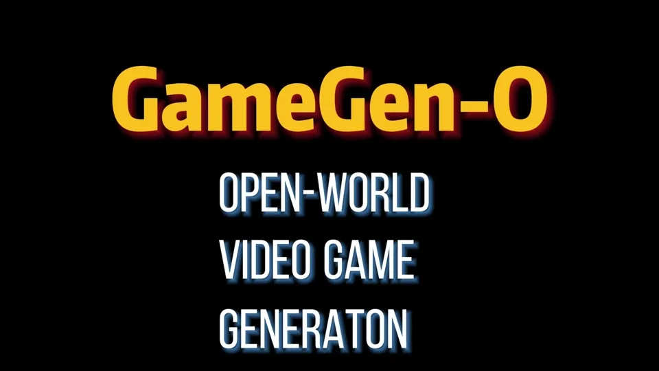
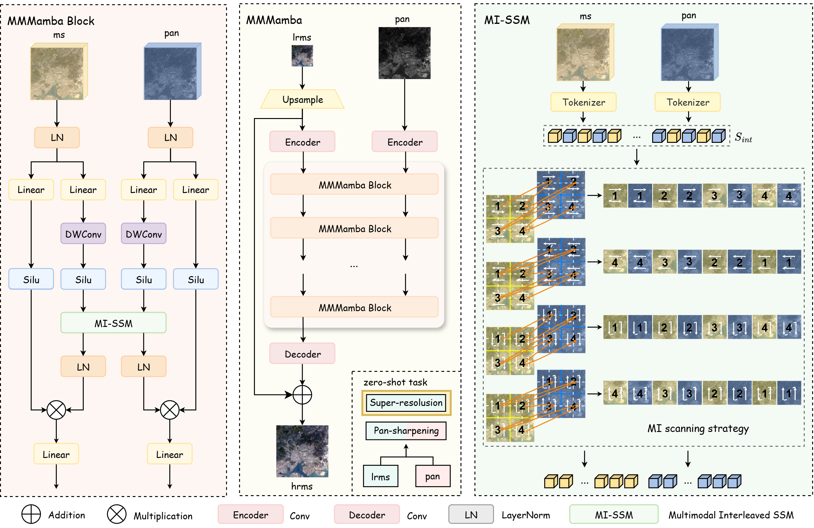

Independent AI Researcher
Building world models for intelligent creation.
I work on world models, multimodal generative intelligence, and AI agents—turning frontier research into systems that can imagine, act, and create.
Previously
Principal Researcher
Huawei Hong Kong AI Lab
Education
Ph.D. in Computer Science
HKUST
Focus
World Models
Multimodal Intelligence
Background and education
Previously, I was a Principal Researcher at AI Lab, Huawei Hong Kong Research Center, where I led research on visual generation and world models. I coordinated a 20+ member research and engineering effort spanning frontier model research, large-scale systems, data pipelines, evaluation, and product deployment.
I received my Ph.D. in Computer Science and Engineering from HKUST, and my B.Eng. degree from Northwestern Polytechnical University, where I graduated with honors.
01
News
Selected updates and milestones
2026.08NewTwo papers accepted by EMNLP 2026.
2026.04Released Agentic World Modeling, ranked #1 on Hugging Face Daily Papers.
2026.02Released Capybara, a unified visual creation model.
2026.02Paper accepted by CVPR 2026.
2025.11Paper accepted by AAAI 2026.
View news archive
2025.07🎉🎉 Our paper got accepted by IEEE TMI!
2025.06🎉🎉 Two papers got accepted by IEEE TMI!
2025.05🎉🎉 I successfully passed my PhD thesis defense, thanks to my advisor and all the committee members!
2025.03🎉🎉 I have started my Student Researchership at Intelligent Creation, ByteDance.
2025.01🎉🎉 Our paper got accepted by ICLR 2025, see you in Singapore!
2024.12🎉🎉 Our paper got accepted by IEEE JBHI!
2024.11🎉🎉 I have started researching interactive video generation at Kling Team, Kuaishou!
2024.08🎉🎉 Our paper got accepted by IEEE Transactions on Image Processing and will be published soon!
2024.05🎉🎉 Our paper got accepted by MICCAI 2024, see you in Marrakesh!
2024.05🎉🎉 I have started my Student Researchership at Tencent!
2024.01🎉🎉 Our paper got accepted by Patterns and will be published soon!
2023.12🎉🎉 Our paper got accepted by AAAI 2024, see you in Vancouver!
2023.11🎉🎉 Our paper got accepted by Nature Medicine and will be published soon!
2023.06🎉🎉 I successfully passed my PhD qualifying examination!
2023.05🎉🎉 Our two papers got accepted by MICCAI 2023 (one early accepted), see you in Vancouver!
2023.03🎉🎉 Our paper got accepted by CVPR 2023, see you in Vancouver!
2023.02🎉🎉 Our paper was shortlisted by CSE Research and Technology Forum!
2022.07🎉🎉 Glad to be selected for MICCAI Travel Award!
2022.05🎉🎉 Our paper got early accepted by MICCAI 2022, see you in Singapore!
2022.03🎉🎉 Honored to be the person in charge of 2022/23 TSSSU. Thank you, Innovation and Technology Commission!
2021.10🎉🎉 Our paper got accepted by IEEE JSAC!
02
Selected Publications
Representative work across generative intelligence and medical AI
* co-first author · † project lead · ✉ correspondence author
VISUAL GENERATION & WORLD MODELS

InsEdit: Towards Instruction-based Visual Editing via Data-Efficient Video Diffusion Models Adaptation



A Survey of Interactive Generative Video

MODEL GENERALIZATION & DATA SHIFT

LLM-driven Medical Report Generation via Communication-efficient Heterogeneous Federated Learning


03
Honors & Awards
- The First Prize and Application Innovation Award in the ASC17 Student Supercomputer Challenge, 1/230 (2017)
- The Excellent Paper Award for the National College Students Mathematics Modeling Competition, 12/33062 (2017)
- The First Prize in the National College Students Mathematics Modeling Competition, Top 0.88% (2017)
- The China National Scholarship for two years, Top 2% (2017/2018)
- The Honor of Outstanding Graduate at Northwestern Polytechnical University, Top 5% (2019)
04
Professional Service
Regular Conference Program Committee Member
- International Conference on Medical Image Computing and Computer Assisted Intervention (MICCAI)
- International Conference on Computer Vision (ICCV)
- IEEE/CVF Conference on Computer Vision and Pattern Recognition (CVPR)
- AAAI Conference on Artificial Intelligence (AAAI)
- International Conference on Learning Representations (ICLR)
- The Annual Conference on Neural Information Processing Systems (NeurIPS)
Regular Journal Reviewer
- Information Fusion
- IEEE Transactions on Medical Imaging (TMI)
- IEEE Transactions on Circuits and Systems for Video Technology (TCSVT)
- IEEE Transactions on Image Processing (TIP)
- IEEE Transactions on Neural Networks and Learning Systems (TNNLS)
Competition and Workshop Organization
- DRAC 2022: Diabetic Retinopathy Analysis Challenge (within MICCAI 22)
05
Teaching & Mentorship
Course
- COMP 4451 Game Programming, Teaching Assistant, 2021-2022 Spring Semester.
- COMP 4421 Image Processing, Teaching Assistant, 2022-2023 Fall Semester.
- COMP 3321 Fundamentals of Artificial Intelligence, Teaching Assistant, 2023-2024 Fall Semester.
- COMP 1001 Exploring Multimedia and Internet Computing, Teaching Assistant, 2024-2025 Spring Semester.
Mentee
- 2026.01 - present, Kien T. Pham (Ph.D. Candidate @ HKUST)
- 2025.12 - present, Xichen Zhang (Ph.D. Candidate @ HKUST)
- 2025.12 - present, Guanhua Zhao (Msc. Student @ PKU)
- 2025.10 - present, Yaofang Liu (Ph.D. Candidate @ CityU)
- 2025.10 - present, Yanheng Li (Ph.D. Candidate @ CityU)
- 2025.06 - present, Zhefan Rao (Ph.D. Candidate @ HKUST)
- 2025.06 - present, Meng Chu (Ph.D. Candidate @ HKUST)
- 2025.05 - present, Jingran Su (Ph.D. Candidate @ PolyU)
- 2025.05 - present, Zhaoqing Li (Ph.D. Candidate @ CUHK)
- 2023.02 - 2025.06, Yifei Wu (Ph.D. Candidate @ NWPU)
- 2022.06 - 2024.05, Yuhan Cheng (UG Student @ HKUST, next: M.Ph. Student in HKUST(GZ))
- 2021.11 - 2023.01, Siyu Chen (UG Student @ HKUST, next: Ph.D. Student in HKUST)
06
Grants
2022.03 - 2024.03, Technology Start-up Support Scheme for Universities (TSSSU), The Innovation and Technology Commission (ITC) of the Hong Kong SAR.
07
Selected Experience

Intern Researcher, Intelligent Creation, ByteDance, China
2025.03 - 2025.06
Intern Researcher, Kling Team, Kuaishou (Kwai), China
2024.11 - 2025.03
Intern Researcher, Tencent, China
2024.05 - 2024.10